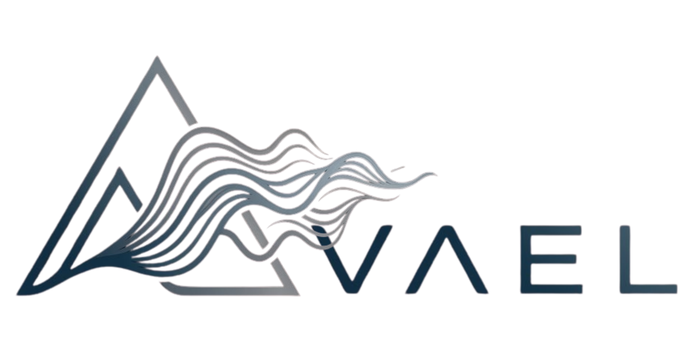

Save your scenes here and load them instantly. Thumbnails are captured from the canvas.
Click any layer name to edit its parameters. Use the modulation section to route audio signals to params.
0.5× = half speed · 1.0× = normal · 2.0× = double speed
Animate parameters over time with oscillating waveforms, independent of audio input.
Loads audio, hits record, and stops automatically when the song ends. Records video + audio together.
Audio will be captured automatically if audio is playing. Exports as .webm — convert to MP4 with: ffmpeg -i recording.webm output.mp4
To convert to MP4: ffmpeg -i recording.webm output.mp4
Build your setlist, add audio to each scene, then use this checklist.